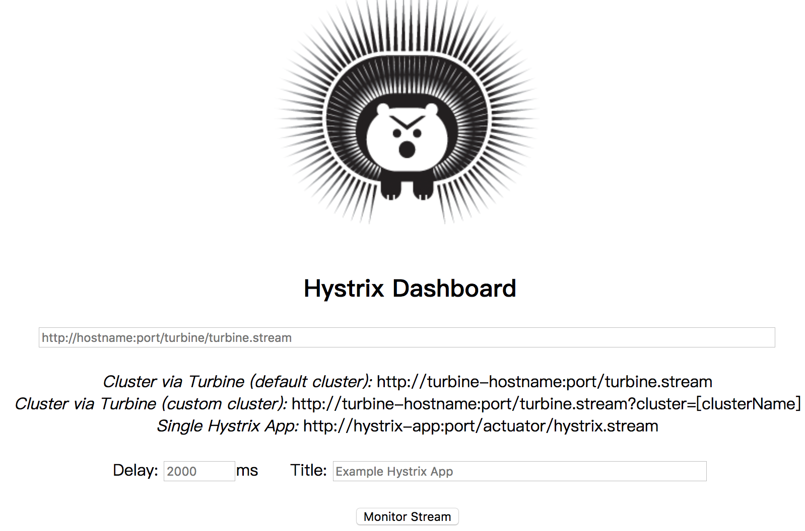
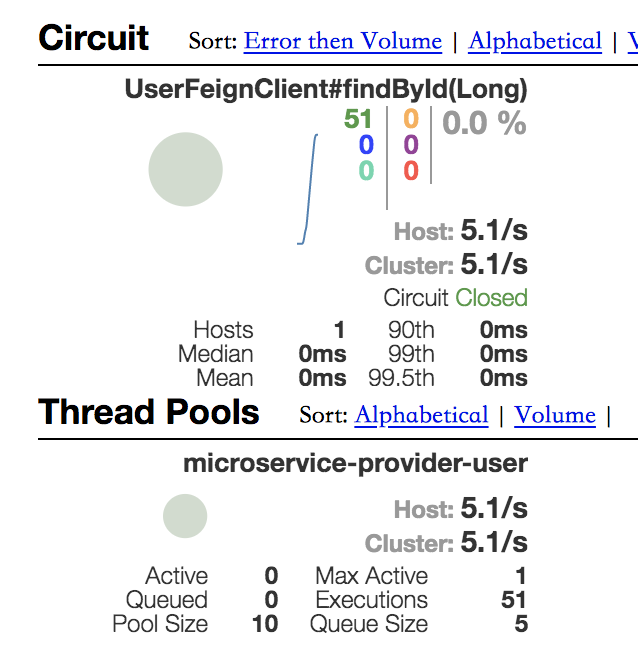
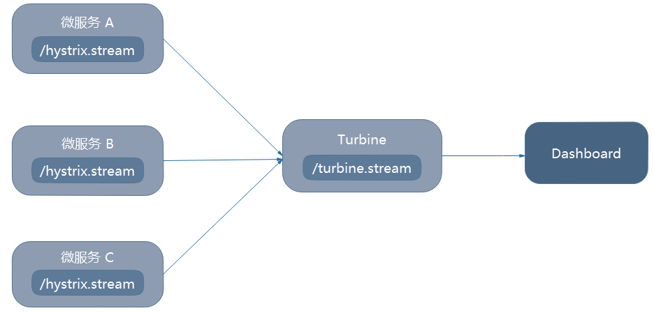
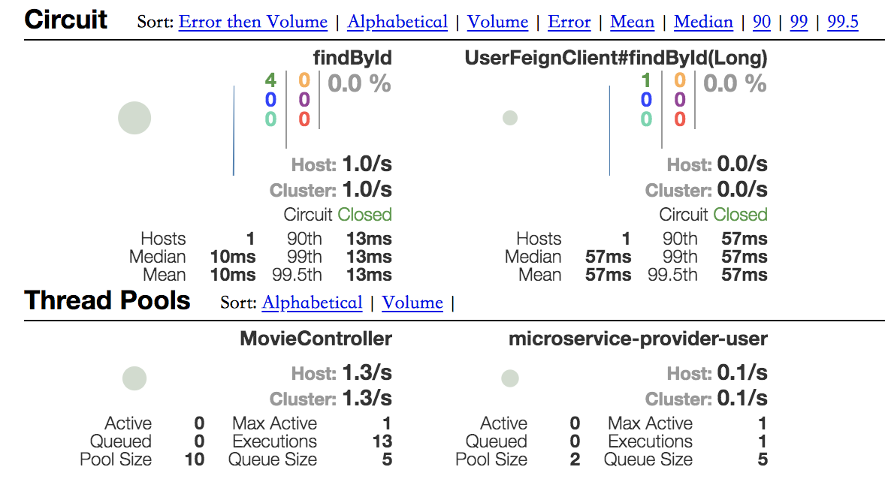

<!DOCTYPE HTML>
<html lang="zh-CN">
<head><meta name="generator" content="Hexo 3.8.0">
    <!--Setting-->
    <meta charset="UTF-8">
    <meta name="viewport" content="width=device-width, user-scalable=no, initial-scale=1.0, maximum-scale=1.0, minimum-scale=1.0">
    <meta http-equiv="X-UA-Compatible" content="IE=Edge,chrome=1">
    <meta http-equiv="Cache-Control" content="no-siteapp">
    <meta http-equiv="Cache-Control" content="no-transform">
    <meta http-equiv="pragma" content="no-cache">
    <meta http-equiv="Cache-Control" content="no-cache, must-revalidate">
    <meta http-equiv="expires" content="Mon Apr 06 2020 02:12:39 GMT+0800 (CST)">
    <meta name="renderer" content="webkit|ie-comp|ie-stand">
    <meta name="apple-mobile-web-app-capable" content="张万众的博客 - 关注Spring Cloud、Docker">
    <meta name="apple-mobile-web-app-status-bar-style" content="black">
    <meta name="format-detection" content="telephone=no,email=no,adress=no">
    <meta name="browsermode" content="application">
    <meta name="screen-orientation" content="portrait">
    <meta name="theme-version" content="1.2.3">
    <meta name="root" content="/">
    
    <!--SEO-->

    <meta name="keywords" content="Spring Cloud,Feign,Hystrix,断路器,Turbine,Hystrix Dashboard">


    <meta name="description" content="Hystrix提供了监控Hystrix Command的能力，本节来详细探讨。
监控端点与数据应用整合Hystrix，同时应用包含spring-boot-starter-actuator 依赖，就会存在一个/actuator/hystrix.stream 端点，用来监控Hystrix Comm...">


<meta name="robots" content="all">
<meta name="google" content="all">
<meta name="googlebot" content="all">
<meta name="verify" content="all">
    <!--Title-->


<title>跟我学Spring Cloud（Finchley版）-15-Hystrix监控详解 | 张万众的博客 - 关注Spring Cloud、Docker</title>


    <link rel="alternate" href="../../atom.html" title="张万众的博客 - 关注Spring Cloud、Docker" type="application/atom+xml">


    

    


<link rel="stylesheet" href="../../static/css/bootstrap.min-271a649e0635d6fa1b.css">
<link rel="stylesheet" href="../../static/css/font-awesome.min-ac2bebcf7fb5b26.css">
<link rel="stylesheet" href="../../static/css/style-6f3c140f6eee20e6591da00ec0.css">


    


    <script>
        var _hmt = _hmt || [];
        (function() {
            var hm = document.createElement("script");
            hm.src = "https://hm.baidu.com/hm.js?13766878cde148282622871dd245a973";
            var s = document.getElementsByTagName("script")[0];
            s.parentNode.insertBefore(hm, s);
        })();
    </script>


    

</head>

</html>
<!--[if lte IE 8]>
<style>
    html{ font-size: 1em }
</style>
<![endif]-->
<!--[if lte IE 9]>
<div style="ie">你使用的浏览器版本过低，为了你更好的阅读体验，请更新浏览器的版本或者使用其他现代浏览器，比如Chrome、Firefox、Safari等。</div>
<![endif]-->

<body>
    
    <nav class="main-navigation">
    <div class="container">
        <div class="row clearfix">
            <div class="col-md-12 column">
                <nav class="navbar navbar-default" style="background-color:#fff;border:0;margin-bottom:0" role="navigation">
                    <div class="navbar-header">
                        <button type="button" class="navbar-toggle" data-toggle="collapse" data-target="#navbar-collapse-1">
                            <span class="sr-only">切</span>
                            <span class="icon-bar"></span>
                            <span class="icon-bar"></span>
                            <span class="icon-bar"></span>
                        </button>
                        <a class="logo" href="../../index.html">
                            张万众的博客
                        </a>
                    </div>

                    <div class="collapse navbar-collapse" style="border:0;" id="navbar-collapse-1">
                        <ul class="nav navbar-nav">
                            
                                
                                    <li>
                                        <a href="../../about.html" target="_blank">
                                            <i class="fa fa-user"></i>
                                            关于我
                                        </a>
                                    </li>
                                
                            
                                
                                    <li>
                                        <a href="../../archives.html" target="_blank">
                                            <i class="fa fa-archive"></i>
                                            归档
                                        </a>
                                    </li>
                                
                            
                                
                                    <li class="dropdown">
                                        <a href="#" class="dropdown-toggle" data-toggle="dropdown" data-hover="dropdown">
                                            <i class="fa fa-fire"></i>
                                            系列课程
                                            <strong class="caret"></strong>
                                        </a>
                                        <ul class="dropdown-menu">
                                            
                                                <li>
                                                    <a href="../../docker/00-docker-lession-index.html" target="_blank">
                                                        <i class="fa "></i>
                                                        Docker系列教程
                                                    </a>
                                                </li>
                                            
                                                <li>
                                                    <a href="../spring-cloud-index.html" target="_blank">
                                                        <i class="fa "></i>
                                                        Spring Cloud系列教程
                                                    </a>
                                                </li>
                                            
                                                <li>
                                                    <a href="../../spring-boot/spring-boot-index.html" target="_blank">
                                                        <i class="fa "></i>
                                                        Spring Boot系列教程
                                                    </a>
                                                </li>
                                            
                                        </ul>
                                    </li>
                                
                            
                                
                                    <li class="dropdown">
                                        <a href="#" class="dropdown-toggle" data-toggle="dropdown" data-hover="dropdown">
                                            <i class="fa fa-book"></i>
                                            开源书
                                            <strong class="caret"></strong>
                                        </a>
                                        <ul class="dropdown-menu">
                                            
                                                <li>
                                                    <a href="../../books/rocketmq.html" target="_blank">
                                                        <i class="fa fa-rocket"></i>
                                                        RocketMQ开发者指南
                                                    </a>
                                                </li>
                                            
                                                <li>
                                                    <a href="../../books/skywalking.html" target="_blank">
                                                        <i class="fa fa-skyatlas"></i>
                                                        Skywalking 6.2.0中文文档
                                                    </a>
                                                </li>
                                            
                                        </ul>
                                    </li>
                                
                            
                                
                                    <li class="dropdown">
                                        <a href="#" class="dropdown-toggle" data-toggle="dropdown" data-hover="dropdown">
                                            <i class="fa fa-cog"></i>
                                            工具
                                            <strong class="caret"></strong>
                                        </a>
                                        <ul class="dropdown-menu">
                                            
                                                <li>
                                                    <a href="../../tools/markdown2.html" target="_blank">
                                                        <i class="fa "></i>
                                                        微信排版工具2.0
                                                    </a>
                                                </li>
                                            
                                        </ul>
                                    </li>
                                
                            
                        </ul>
                        
                            <form id="search-form" class="navbar-form navbar-right">
                                <div class="form-group input-group">
                                    <input type="text" id="local-search-input" class="form-control" placeholder="搜我...">
                                    <span class="input-group-btn">
                                        <a class="btn btn-default">
                                            <i class="fa fa-search"></i>
                                        </a>
                                    </span>
                                </div>
                                <div id="local-search-result" class="local-search-result-cls"></div>
                            </form>
                        
                    </div>
                </nav>
            </div>
        </div>
    </div>
</nav>

    <a href="javascript:;" target="_blank">
        
    </a>


    <section class="content-wrap">
        <div class="container">
            <div class="row">
                <main class="col-md-8 main-content m-post">
                    

<p id="process"></p>
<article class="post">
    <div class="post-head">
        <h1 id="跟我学Spring Cloud（Finchley版）-15-Hystrix监控详解">
            
                跟我学Spring Cloud（Finchley版）-15-Hystrix监控详解
            
        </h1>
        <div class="post-meta">
    
        <span class="categories-meta fa-wrap">
            <i class="fa fa-folder-open-o"></i>
            <a class="category-link" href="javascript:;">Spring Cloud</a>
        </span>
    

    
        <span class="fa-wrap">
            <i class="fa fa-tags"></i>
            <span class="tags-meta">
                
                    <a class="tag-link" href="javascript:;">Feign</a> <a class="tag-link" href="javascript:;">Hystrix</a> <a class="tag-link" href="javascript:;">Hystrix Dashboard</a> <a class="tag-link" href="javascript:;">Spring Cloud</a> <a class="tag-link" href="javascript:;">Turbine</a>
                
            </span>
        </span>
    

    
        
        <span class="fa-wrap">
            <i class="fa fa-clock-o"></i>
            <span class="date-meta">2019/01/19</span>
        </span>
        
            <span class="fa-wrap">
                <i class="fa fa-eye"></i>
                <span id="busuanzi_value_page_pv"></span>
            </span>
        
    
</div>
        
        
    </div>
    
    <div class="post-body post-content" id="post-content">
        
    <div class="toc-article">
        <strong>
            目录
        </strong>
        <div class="toc-content">
            <ol class="toc"><li class="toc-item toc-level-2"><a class="toc-link" href="#监控端点与数据"><span class="toc-text">监控端点与数据</span></a><ol class="toc-child"><li class="toc-item toc-level-3"><a class="toc-link" href="#对于Feign"><span class="toc-text">对于Feign</span></a></li></ol></li><li class="toc-item toc-level-2"><a class="toc-link" href="#可视化监控数据"><span class="toc-text">可视化监控数据</span></a><ol class="toc-child"><li class="toc-item toc-level-3"><a class="toc-link" href="#编写Hystrix-Dashboard"><span class="toc-text">编写Hystrix Dashboard</span></a></li><li class="toc-item toc-level-3"><a class="toc-link" href="#图表解读"><span class="toc-text">图表解读</span></a></li><li class="toc-item toc-level-3"><a class="toc-link" href="#小技巧"><span class="toc-text">小技巧</span></a></li></ol></li><li class="toc-item toc-level-2"><a class="toc-link" href="#监控数据聚合-Turbine"><span class="toc-text">监控数据聚合-Turbine</span></a><ol class="toc-child"><li class="toc-item toc-level-3"><a class="toc-link" href="#Turbine简介"><span class="toc-text">Turbine简介</span></a></li><li class="toc-item toc-level-3"><a class="toc-link" href="#编写Turbine-Server"><span class="toc-text">编写Turbine Server</span></a></li></ol></li><li class="toc-item toc-level-2"><a class="toc-link" href="#配套代码"><span class="toc-text">配套代码</span></a></li></ol>
        </div>
    </div>


        <p>Hystrix提供了监控Hystrix Command的能力，本节来详细探讨。</p>
<h2 id="监控端点与数据"><a href="#监控端点与数据" class="headerlink" title="监控端点与数据"></a>监控端点与数据</h2><p>应用整合Hystrix，同时应用包含<code>spring-boot-starter-actuator</code> 依赖，就会存在一个<code>/actuator/hystrix.stream</code> 端点，用来监控Hystrix Command。<strong>当被<code>@HystrixCommand</code>  注解了的方法被调用时，就会产生监控信息，并暴露到该端点中</strong>。当然，该端点默认是不会暴露的，需使用如下配置将其暴露。</p>
<figure class="highlight yaml"><table><tr><td class="gutter"><pre><span class="line">1</span><br><span class="line">2</span><br><span class="line">3</span><br><span class="line">4</span><br><span class="line">5</span><br></pre></td><td class="code"><pre><span class="line"><span class="attr">management:</span></span><br><span class="line"><span class="attr">  endpoints:</span></span><br><span class="line"><span class="attr">    web:</span></span><br><span class="line"><span class="attr">      exposure:</span></span><br><span class="line"><span class="attr">        include:</span> <span class="string">'hystrix.stream'</span></span><br></pre></td></tr></table></figure>
<p>此时，访问<code>/actuator/hystrix.stream</code> 可返回如下结果：</p>
<figure class="highlight json"><table><tr><td class="gutter"><pre><span class="line">1</span><br></pre></td><td class="code"><pre><span class="line">&#123;<span class="attr">"type"</span>:<span class="string">"HystrixCommand"</span>,<span class="attr">"name"</span>:<span class="string">"findById"</span>,<span class="attr">"group"</span>:<span class="string">"MovieController"</span>,<span class="attr">"currentTime"</span>:<span class="number">1547905939151</span>,<span class="attr">"isCircuitBreakerOpen"</span>:<span class="literal">false</span>,<span class="attr">"errorPercentage"</span>:<span class="number">0</span>,<span class="attr">"errorCount"</span>:<span class="number">0</span>,<span class="attr">"requestCount"</span>:<span class="number">0</span>,<span class="attr">"rollingCountBadRequests"</span>:<span class="number">0</span>,<span class="attr">"rollingCountCollapsedRequests"</span>:<span class="number">0</span>,<span class="attr">"rollingCountEmit"</span>:<span class="number">0</span>,<span class="attr">"rollingCountExceptionsThrown"</span>:<span class="number">0</span>,<span class="attr">"rollingCountFailure"</span>:<span class="number">0</span>,<span class="attr">"rollingCountFallbackEmit"</span>:<span class="number">0</span>,<span class="attr">"rollingCountFallbackFailure"</span>:<span class="number">0</span>,<span class="attr">"rollingCountFallbackMissing"</span>:<span class="number">0</span>,<span class="attr">"rollingCountFallbackRejection"</span>:<span class="number">0</span>,<span class="attr">"rollingCountFallbackSuccess"</span>:<span class="number">0</span>,<span class="attr">"rollingCountResponsesFromCache"</span>:<span class="number">0</span>,<span class="attr">"rollingCountSemaphoreRejected"</span>:<span class="number">0</span>,<span class="attr">"rollingCountShortCircuited"</span>:<span class="number">0</span>,<span class="attr">"rollingCountSuccess"</span>:<span class="number">0</span>,<span class="attr">"rollingCountThreadPoolRejected"</span>:<span class="number">0</span>,<span class="attr">"rollingCountTimeout"</span>:<span class="number">0</span>,<span class="attr">"currentConcurrentExecutionCount"</span>:<span class="number">0</span>,<span class="attr">"rollingMaxConcurrentExecutionCount"</span>:<span class="number">0</span>,<span class="attr">"latencyExecute_mean"</span>:<span class="number">0</span>,<span class="attr">"latencyExecute"</span>:&#123;<span class="attr">"0"</span>:<span class="number">0</span>,<span class="attr">"25"</span>:<span class="number">0</span>,<span class="attr">"50"</span>:<span class="number">0</span>,<span class="attr">"75"</span>:<span class="number">0</span>,<span class="attr">"90"</span>:<span class="number">0</span>,<span class="attr">"95"</span>:<span class="number">0</span>,<span class="attr">"99"</span>:<span class="number">0</span>,<span class="attr">"99.5"</span>:<span class="number">0</span>,<span class="attr">"100"</span>:<span class="number">0</span>&#125;,<span class="attr">"latencyTotal_mean"</span>:<span class="number">0</span>,<span class="attr">"latencyTotal"</span>:&#123;<span class="attr">"0"</span>:<span class="number">0</span>,<span class="attr">"25"</span>:<span class="number">0</span>,<span class="attr">"50"</span>:<span class="number">0</span>,<span class="attr">"75"</span>:<span class="number">0</span>,<span class="attr">"90"</span>:<span class="number">0</span>,<span class="attr">"95"</span>:<span class="number">0</span>,<span class="attr">"99"</span>:<span class="number">0</span>,<span class="attr">"99.5"</span>:<span class="number">0</span>,<span class="attr">"100"</span>:<span class="number">0</span>&#125;,<span class="attr">"propertyValue_circuitBreakerRequestVolumeThreshold"</span>:<span class="number">20</span>,<span class="attr">"propertyValue_circuitBreakerSleepWindowInMilliseconds"</span>:<span class="number">5000</span>,<span class="attr">"propertyValue_circuitBreakerErrorThresholdPercentage"</span>:<span class="number">50</span>,<span class="attr">"propertyValue_circuitBreakerForceOpen"</span>:<span class="literal">false</span>,<span class="attr">"propertyValue_circuitBreakerForceClosed"</span>:<span class="literal">false</span>,<span class="attr">"propertyValue_circuitBreakerEnabled"</span>:<span class="literal">true</span>,<span class="attr">"propertyValue_executionIsolationStrategy"</span>:<span class="string">"THREAD"</span>,<span class="attr">"propertyValue_executionIsolationThreadTimeoutInMilliseconds"</span>:<span class="number">1000</span>,<span class="attr">"propertyValue_executionTimeoutInMilliseconds"</span>:<span class="number">1000</span>,<span class="attr">"propertyValue_executionIsolationThreadInterruptOnTimeout"</span>:<span class="literal">true</span>,<span class="attr">"propertyValue_executionIsolationThreadPoolKeyOverride"</span>:<span class="literal">null</span>,<span class="attr">"propertyValue_executionIsolationSemaphoreMaxConcurrentRequests"</span>:<span class="number">10</span>,<span class="attr">"propertyValue_fallbackIsolationSemaphoreMaxConcurrentRequests"</span>:<span class="number">10</span>,<span class="attr">"propertyValue_metricsRollingStatisticalWindowInMilliseconds"</span>:<span class="number">10000</span>,<span class="attr">"propertyValue_requestCacheEnabled"</span>:<span class="literal">true</span>,<span class="attr">"propertyValue_requestLogEnabled"</span>:<span class="literal">true</span>,<span class="attr">"reportingHosts"</span>:<span class="number">1</span>,<span class="attr">"threadPool"</span>:<span class="string">"MovieController"</span>&#125;</span><br></pre></td></tr></table></figure>
<h3 id="对于Feign"><a href="#对于Feign" class="headerlink" title="对于Feign"></a>对于Feign</h3><p>前面讲过Feign默认已经整合了Hystrix，但这个整合其实是“不完整”，因为它默认不带有监控端点，如果你在使用Feign的同时，也想使用监控端点，需按照如下步骤操作：</p>
<ul>
<li><p>加依赖</p>
<figure class="highlight xml"><table><tr><td class="gutter"><pre><span class="line">1</span><br><span class="line">2</span><br><span class="line">3</span><br><span class="line">4</span><br></pre></td><td class="code"><pre><span class="line"><span class="tag">&lt;<span class="name">dependency</span>&gt;</span></span><br><span class="line">  <span class="tag">&lt;<span class="name">groupId</span>&gt;</span>org.springframework.cloud<span class="tag">&lt;/<span class="name">groupId</span>&gt;</span></span><br><span class="line">  <span class="tag">&lt;<span class="name">artifactId</span>&gt;</span>spring-cloud-starter-netflix-hystrix<span class="tag">&lt;/<span class="name">artifactId</span>&gt;</span></span><br><span class="line"><span class="tag">&lt;/<span class="name">dependency</span>&gt;</span></span><br></pre></td></tr></table></figure>
</li>
<li><p>在启动类上添加注解<code>@EnableCircuitBreaker</code> </p>
</li>
<li><p>在<code>application.yml</code> 中添加如下配置：</p>
<figure class="highlight yaml"><table><tr><td class="gutter"><pre><span class="line">1</span><br><span class="line">2</span><br><span class="line">3</span><br><span class="line">4</span><br><span class="line">5</span><br></pre></td><td class="code"><pre><span class="line"><span class="attr">management:</span></span><br><span class="line"><span class="attr">  endpoints:</span></span><br><span class="line"><span class="attr">    web:</span></span><br><span class="line"><span class="attr">      exposure:</span></span><br><span class="line"><span class="attr">        include:</span> <span class="string">'hystrix.stream'</span></span><br></pre></td></tr></table></figure>
</li>
</ul>
<h2 id="可视化监控数据"><a href="#可视化监控数据" class="headerlink" title="可视化监控数据"></a>可视化监控数据</h2><p>至此，我们已可通过<code>/actuator/hystrix.strem</code> 端点观察Hystrix运行情况，但文字形式的监控数据很不直观。现实项目中一般都需要一个可视化的界面，这样才能迅速了解系统的运行情况。Hystrix提供了一个轮子——Hystrix Dashboard，<strong>它的作用只有一个，那就是将文字形式的监控数据转换成图表展示</strong>。</p>
<h3 id="编写Hystrix-Dashboard"><a href="#编写Hystrix-Dashboard" class="headerlink" title="编写Hystrix Dashboard"></a>编写Hystrix Dashboard</h3><ul>
<li><p>加依赖</p>
<figure class="highlight xml"><table><tr><td class="gutter"><pre><span class="line">1</span><br><span class="line">2</span><br><span class="line">3</span><br><span class="line">4</span><br></pre></td><td class="code"><pre><span class="line"><span class="tag">&lt;<span class="name">dependency</span>&gt;</span></span><br><span class="line">  <span class="tag">&lt;<span class="name">groupId</span>&gt;</span>org.springframework.cloud<span class="tag">&lt;/<span class="name">groupId</span>&gt;</span></span><br><span class="line">  <span class="tag">&lt;<span class="name">artifactId</span>&gt;</span>spring-cloud-starter-netflix-hystrix-dashboard<span class="tag">&lt;/<span class="name">artifactId</span>&gt;</span></span><br><span class="line"><span class="tag">&lt;/<span class="name">dependency</span>&gt;</span></span><br></pre></td></tr></table></figure>
</li>
<li><p>加注解：<code>@EnableHystrixDashboard</code></p>
</li>
<li><p>写配置：</p>
<figure class="highlight yaml"><table><tr><td class="gutter"><pre><span class="line">1</span><br><span class="line">2</span><br><span class="line">3</span><br></pre></td><td class="code"><pre><span class="line"><span class="comment"># 端口随便写，这里只是表明下自己的端口规划而已</span></span><br><span class="line"><span class="attr">server:</span></span><br><span class="line"><span class="attr">  port:</span> <span class="number">8030</span></span><br></pre></td></tr></table></figure>
</li>
</ul>
<p>启动后，访问<code>http://localhost:8030/hystrix</code> 即可看到类似如下的界面：</p>
<p></p>
<p>将上文的<code>/actuator/hystrix.stream</code> 端点的地址贴到图中，并指定Title，然后点击<code>Monitor Stream</code> 按钮，即可看到类似如下的图表：</p>
<p></p>
<h3 id="图表解读"><a href="#图表解读" class="headerlink" title="图表解读"></a>图表解读</h3><p></p>
<h3 id="小技巧"><a href="#小技巧" class="headerlink" title="小技巧"></a>小技巧</h3><p>如果对<code>http://localhost:8030/hystrix</code> 地址中的<code>hystrix</code> 小尾巴不满意怎么办？还记得Spring MVC的服务器端跳转（forward）吗？只需添加类似如下的Controller，就可以使用<code>http://localhost:8030/</code> 访问到Hystrix Dashboard首页了。</p>
<figure class="highlight java"><table><tr><td class="gutter"><pre><span class="line">1</span><br><span class="line">2</span><br><span class="line">3</span><br><span class="line">4</span><br><span class="line">5</span><br><span class="line">6</span><br><span class="line">7</span><br></pre></td><td class="code"><pre><span class="line"><span class="meta">@Controller</span></span><br><span class="line"><span class="keyword">public</span> <span class="class"><span class="keyword">class</span> <span class="title">HystrixIndexController</span> </span>&#123;</span><br><span class="line">  <span class="meta">@GetMapping</span>(<span class="string">""</span>)</span><br><span class="line">  <span class="function"><span class="keyword">public</span> String <span class="title">index</span><span class="params">()</span> </span>&#123;</span><br><span class="line">    <span class="keyword">return</span> <span class="string">"forward:/hystrix"</span>;</span><br><span class="line">  &#125;</span><br><span class="line">&#125;</span><br></pre></td></tr></table></figure>
<h2 id="监控数据聚合-Turbine"><a href="#监控数据聚合-Turbine" class="headerlink" title="监控数据聚合-Turbine"></a>监控数据聚合-Turbine</h2><p>至此，我们已实现监控数据的可视化，然而现阶段一次只能监控一个微服务实例，这显然不能适用于生产。为了能监控多个微服务，Netflix官方再次发挥造轮子的精神——它们又编写了一个组件，Turbine。</p>
<blockquote>
<p>TIPS</p>
<p>吐槽一下，Turbine是一个“发布即死亡”的项目——2014年9月发布1.0.0后，2014年11月又迅速推出2.0.0.DP，之后基本就不维护了，至今已经4年没有提交过代码了。</p>
<p><strong>Spring Cloud中，1.0.0以及2.0.0.DP两个版本都有使用。</strong>Turbine 1.0.0用于基于HTTP方式的数据收集（也就是本节讲的这种方式）Turbine 2.0.0.DP2则用于基于MQ方式的收集（这种方式很多人遇到问题，单独写一篇番外吧）</p>
</blockquote>
<h3 id="Turbine简介"><a href="#Turbine简介" class="headerlink" title="Turbine简介"></a>Turbine简介</h3><p>Turbine是一个聚合Hystrix监控数据的工具，它可将所有相关/hystrix.stream端点的数据聚合到一个组合的/turbine.stream中，从而让集群的监控更加方便。</p>
<p>引入Turbine后，架构图如下：</p>
<p></p>
<p><strong>TIPS</strong></p>
<p>Turbine的GitHub：<a href="javascript:;" target="_blank" rel="noopener">https://github.com/Netflix/Turbine</a></p>
<h3 id="编写Turbine-Server"><a href="#编写Turbine-Server" class="headerlink" title="编写Turbine Server"></a>编写Turbine Server</h3><ul>
<li><p>加依赖</p>
<figure class="highlight xml"><table><tr><td class="gutter"><pre><span class="line">1</span><br><span class="line">2</span><br><span class="line">3</span><br><span class="line">4</span><br></pre></td><td class="code"><pre><span class="line"><span class="tag">&lt;<span class="name">dependency</span>&gt;</span></span><br><span class="line">  <span class="tag">&lt;<span class="name">groupId</span>&gt;</span>org.springframework.cloud<span class="tag">&lt;/<span class="name">groupId</span>&gt;</span></span><br><span class="line">  <span class="tag">&lt;<span class="name">artifactId</span>&gt;</span>spring-cloud-starter-netflix-turbine<span class="tag">&lt;/<span class="name">artifactId</span>&gt;</span></span><br><span class="line"><span class="tag">&lt;/<span class="name">dependency</span>&gt;</span></span><br></pre></td></tr></table></figure>
</li>
<li><p>加注解：<code>@EnableTurbine</code></p>
</li>
<li><p>写配置：</p>
<figure class="highlight yaml"><table><tr><td class="gutter"><pre><span class="line">1</span><br><span class="line">2</span><br><span class="line">3</span><br><span class="line">4</span><br><span class="line">5</span><br><span class="line">6</span><br><span class="line">7</span><br><span class="line">8</span><br><span class="line">9</span><br><span class="line">10</span><br><span class="line">11</span><br><span class="line">12</span><br><span class="line">13</span><br><span class="line">14</span><br><span class="line">15</span><br></pre></td><td class="code"><pre><span class="line"><span class="attr">server:</span></span><br><span class="line"><span class="attr">  port:</span> <span class="number">8031</span></span><br><span class="line"><span class="attr">spring:</span></span><br><span class="line"><span class="attr">  application:</span></span><br><span class="line"><span class="attr">    name:</span> <span class="string">microservice-hystrix-turbine</span></span><br><span class="line"><span class="attr">eureka:</span></span><br><span class="line"><span class="attr">  client:</span></span><br><span class="line"><span class="attr">    service-url:</span></span><br><span class="line"><span class="attr">      defaultZone:</span> <span class="attr">http://localhost:8761/eureka/</span></span><br><span class="line"><span class="attr">  instance:</span></span><br><span class="line"><span class="attr">    prefer-ip-address:</span> <span class="literal">true</span></span><br><span class="line"><span class="attr">turbine:</span></span><br><span class="line">  <span class="comment"># 要监控的微服务列表，多个用,分隔</span></span><br><span class="line"><span class="attr">  appConfig:</span> <span class="string">microservice-consumer-movie,microservice-consumer-movie-feign</span></span><br><span class="line"><span class="attr">  clusterNameExpression:</span> <span class="string">"'default'"</span></span><br></pre></td></tr></table></figure>
</li>
</ul>
<p>这样，Tubine即可聚合microservice-consumer-movie,microservice-consumer-movie-feign两个服务的<code>/actuator/hystrix.stream</code> 信息，并暴露在<code>http://localhost:8031/turbine.stream</code> ，将该地址贴到Hystrix Dashboard上，即可看到类似如下的图表：</p>
<p></p>
<h2 id="配套代码"><a href="#配套代码" class="headerlink" title="配套代码"></a>配套代码</h2><p>通用方式暴露<code>/actuator/hystrix.stream</code> 端点：</p>
<ul>
<li>GitHub：<a href="javascript:;" target="_blank" rel="noopener">https://github.com/eacdy/spring-cloud-study/tree/master/2018-Finchley/microservice-consumer-movie-ribbon-hystrix-common</a></li>
<li>Gitee：<a href="javascript:;" target="_blank" rel="noopener">https://gitee.com/itmuch/spring-cloud-study/tree/master/2018-Finchley/microservice-consumer-movie-ribbon-hystrix-common</a></li>
</ul>
<p>Feign暴露<code>/actuaotr/hystrix.stream</code> 端点：</p>
<ul>
<li>GitHub：<a href="javascript:;" target="_blank" rel="noopener">https://github.com/eacdy/spring-cloud-study/tree/master/2018-Finchley/microservice-consumer-movie-feign-hystrix-stream</a></li>
<li>Gitee：<a href="javascript:;" target="_blank" rel="noopener">https://gitee.com/itmuch/spring-cloud-study/tree/master/2018-Finchley/microservice-consumer-movie-feign-hystrix-stream</a></li>
</ul>
<p>Hystrix Dashboard：</p>
<ul>
<li>GitHub：<a href="javascript:;" target="_blank" rel="noopener">https://github.com/eacdy/spring-cloud-study/tree/master/2018-Finchley/microservice-hystrix-dashboard</a></li>
<li>Gitee：<a href="javascript:;" target="_blank" rel="noopener">https://gitee.com/itmuch/spring-cloud-study/tree/master/2018-Finchley/microservice-hystrix-dashboard</a></li>
</ul>
<p>Turbine：</p>
<ul>
<li>GitHub：<a href="javascript:;" target="_blank" rel="noopener">https://github.com/eacdy/spring-cloud-study/tree/master/2018-Finchley/microservice-hystrix-turbine</a></li>
<li>Gitee：<a href="javascript:;" target="_blank" rel="noopener">https://gitee.com/itmuch/spring-cloud-study/tree/master/2018-Finchley/microservice-hystrix-turbine</a></li>
</ul>

        <h2>相关文章</h2><ul><li><a href="../finchley-13/index.html">跟我学Spring Cloud（Finchley版）-13-通用方式使用Hystrix</a></li><li><a href="../finchley-14/index.html">跟我学Spring Cloud（Finchley版）-14-Feign使用Hystrix</a></li><li><a href="../../spring-cloud-feign-ribbon-first-request-fail/index.html">Spring Cloud中，如何解决Feign/Ribbon第一次请求失败的问题？</a></li><li><a href="../finchley-12/index.html">跟我学Spring Cloud（Finchley版）-12-微服务容错三板斧</a></li><li><a href="../finchley-10/index.html">跟我学Spring Cloud（Finchley版）-10-Feign深入</a></li></ul>
    </div>
    
    <div class="post-footer">
        <div class="col-sm-10">
            <div>
                <b>本文链接</b>：<a href="" target="_blank">跟我学Spring Cloud（Finchley版）-15-Hystrix监控详解</a>
            </div>
            <div>
                
                    转载声明：本博客由张万众创作，采用 <a href="javascript:;" target="_blank"> CC BY 3.0 CN </a> 许可协议。可自由转载、引用，但需署名作者且注明文章出处。如转载至微信公众号，请在文末添加作者公众号二维码。
                
            </div>
            <div>
                
            </div>
        </div>
        <div class="col-sm-2">
            
        </div>
    </div>
</article>

<div class="article-nav prev-next-wrap clearfix">
    
        <a target="_blank" href="../finchley-16/index.html" class="pre-post btn btn-default" title="跟我学Spring Cloud（Finchley版）-16-Zuul">
            <i class="fa fa-angle-left fa-fw"></i><span class="hidden-lg">上一篇</span>
            <span class="hidden-xs">跟我学Spring Cloud（Finchley版）-16-Zuul</span>
        </a>
    
    
        <a target="_blank" href="../finchley-14/index.html" class="next-post btn btn-default" title="跟我学Spring Cloud（Finchley版）-14-Feign使用Hystrix">
            <span class="hidden-lg">下一篇</span>
            <span class="hidden-xs">跟我学Spring Cloud（Finchley版）-14-Feign使用Hystrix</span><i class="fa fa-angle-right fa-fw"></i>
        </a>
    
</div>


    <div id="comments">
        
   <p>评论系统未开启，无法评论！</p>

    </div>


                </main>
                
    <aside class="col-md-4 sidebar">
        
        <div class="widget about-me">
    <div class="row">
        <div class="col-md-5">
            
        </div>
        <div class="col-md-7">
            <a class="series-a" href="javascript:void(0)">公众号</a>
            <ul>
                <li>• 技术干货推送</li>
                <li>• 免费资料领取</li>
                <li><b>• 扫码领取更多惊喜</b></li>
            </ul>
        </div>
    </div>
    
        <div class="row">
            <div class="col-md-5">
                
            </div>
            <div class="col-md-7">
                <a class="series-a" href="javascript:void(0)">小程序</a>
                <ul>
                    <li>• 原创笔记</li>
                    <li>• 独家心法</li>
                    <li><b>• 扫码领取</b></li>
                </ul>
            </div>
        </div>
    
</div>


        
        
    <div class="ad">
        <div class="row">
            <div class="col-md-12">
                <a href="javascript:;" rel="nofollow" target="_blank">
                    
                </a>
            </div>
        </div>
    </div>


        
        <div class="widget">
    <div class="row">
        <div class="col-md-3">
            
        </div>
        <div class="col-md-9">
            <a class="series-a" target="_blank" href="../spring-cloud-index.html">Spring Cloud系列教程</a>
            <p>全面、通俗易懂的Spring Cloud教程</p>
        </div>
    </div>
    <div class="row">
        <div class="col-md-3">
            
        </div>
        <div class="col-md-9">
            <a class="series-a" target="_blank" href="javascript:;">Spring Cloud Alibaba视频教程</a>
            <p>全网唯一，你值得拥有</p>
        </div>
    </div>
    <div class="row">
        <div class="col-md-3">
            
        </div>
        <div class="col-md-9">
            <a class="series-a" target="_blank" href="../../docker/00-docker-lession-index.html">Docker系列教程</a>
            <p>Docker系列</p>
        </div>
    </div>
    <div class="row">
        <div class="col-md-3">
            
        </div>
        <div class="col-md-9">
            <a class="series-a" target="_blank" href="../../spring-boot/spring-boot-index.html">Spring Boot系列教程</a>
            <p>Boot是基石...</p>
        </div>
    </div>
</div>


        
        
    <div class="widget">
        <h3 class="title">分类</h3>
        <ul class="category-list"><li class="category-list-item"><a class="category-list-link" href="javascript:;"><i class="fa" aria-hidden="true">Docker</i></a><span class="category-list-count">31</span></li><li class="category-list-item"><a class="category-list-link" href="javascript:;"><i class="fa" aria-hidden="true">Kubernetes</i></a><span class="category-list-count">2</span></li><li class="category-list-item"><a class="category-list-link" href="javascript:;"><i class="fa" aria-hidden="true">Spring Boot</i></a><span class="category-list-count">6</span></li><li class="category-list-item"><a class="category-list-link current" href="javascript:;"><i class="fa" aria-hidden="true">Spring Cloud</i></a><span class="category-list-count">94</span></li><li class="category-list-item"><a class="category-list-link" href="javascript:;"><i class="fa" aria-hidden="true">Spring Cloud Alibaba</i></a><span class="category-list-count">16</span></li><li class="category-list-item"><a class="category-list-link" href="javascript:;"><i class="fa" aria-hidden="true">Spring Cloud Stream</i></a><span class="category-list-count">1</span></li><li class="category-list-item"><a class="category-list-link" href="../../categories/其他/index.html"><i class="fa" aria-hidden="true">其他</i></a><span class="category-list-count">13</span></li><li class="category-list-item"><a class="category-list-link" href="../../categories/安装教程/index.html"><i class="fa" aria-hidden="true">安装教程</i></a><span class="category-list-count">7</span></li><li class="category-list-item"><a class="category-list-link" href="../../categories/工作/index.html"><i class="fa" aria-hidden="true">工作</i></a><span class="category-list-count">20</span></li></ul>
    </div>


        
        
        
        

        
    </aside>

            </div>
        </div>
    </section>
    <footer class="main-footer">
    <div class="container">
        <div class="row">
        </div>
    </div>
</footer>

<a id="back-to-top" class="icon-btn hide">
	<i class="fa fa-chevron-up"></i>
</a>


    <div class="copyright">
    <div class="container">
        <div class="row">
            <div class="col-sm-12">
                <div class="busuanzi">
    
        访问量:
        <strong id="busuanzi_value_site_pv">
            <i class="fa fa-spinner fa-spin"></i>
        </strong>
        &nbsp; | &nbsp;
        访客数:
        <strong id="busuanzi_value_site_uv">
            <i class="fa fa-spinner fa-spin"></i>
        </strong>
        &nbsp; <strong>Since 2018-12-26</strong>
    
</div>

            </div>
            <div class="col-sm-12">
                <span>Copyright &copy; 2017
                </span> |
                <span>
                    Powered by <a href="javascript:;" class="copyright-links" target="_blank" rel="nofollow">Hexo</a>
                </span> |
                <span>
                    Theme by <a href="javascript:;" class="copyright-links" target="_blank" rel="nofollow">ITMuch</a>
                </span>
            </div>
        </div>
    </div>
</div>

<script src="../../static/js/jquery.min.js"></script>
<script src="../../static/js/bootstrap.min.js"></script>
<script src="../../static/js/bootstrap-hover-dropdown.min.js"></script>

    <script src="../../static/js/search-3f4fbd0557c869ca0516ebb5f.js"></script>


    <script async="" src="../../static/js/busuanzi.pure.mini.js"></script>


<script src="../../static/js/app-da10bb3b2ae5c8348d2bd2cc3faf.js"></script>


</body>
